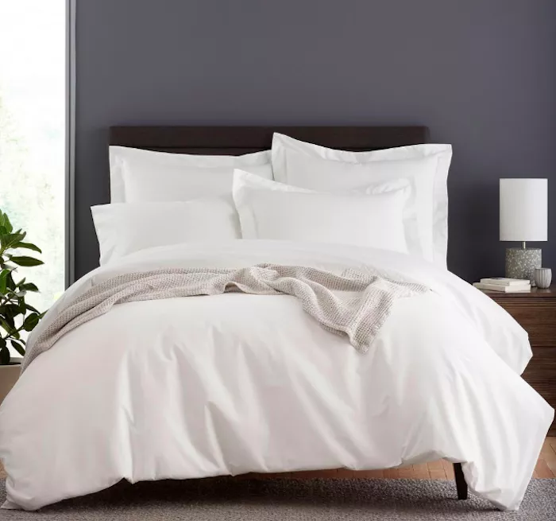
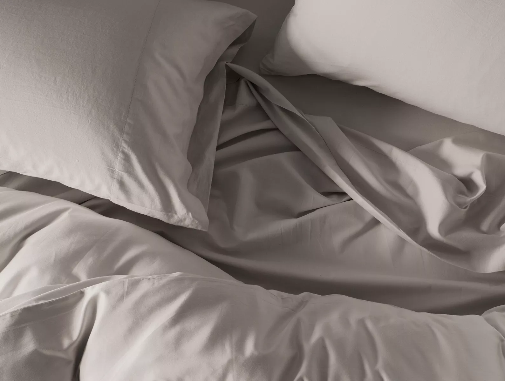
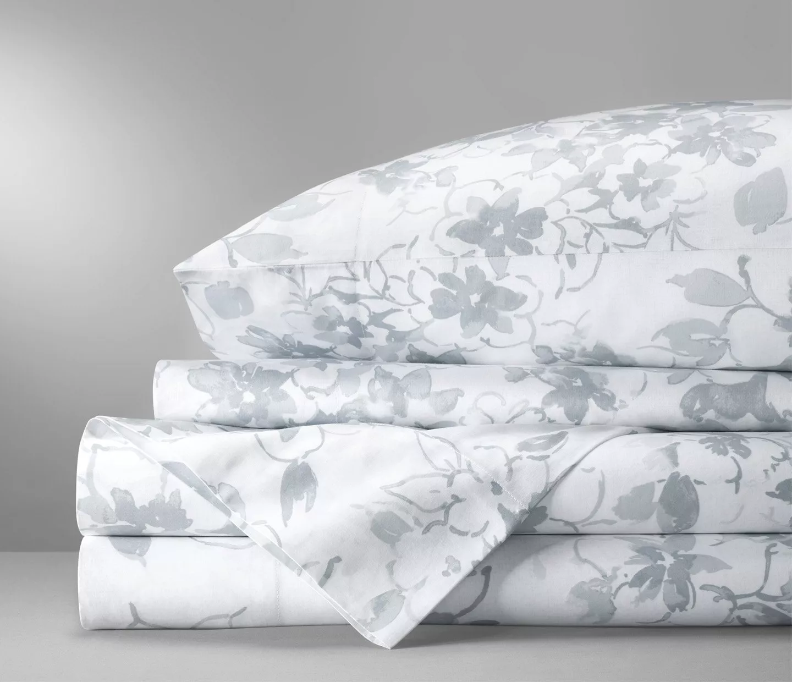
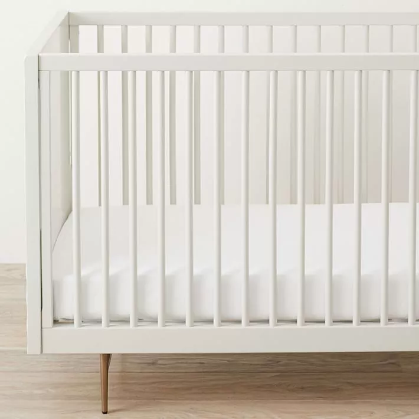

The 9 Best Organic Bedsheets
100% Raw Organic Cotton Bedsheets
Best Overall: Magnolia Organics Dream Collection Sheet Set
 Some of the best organic sheets you can buy are the
Magnolia Organics Dream Collection Sheet Set.
These highly-rated linens are made from Global
Organic Textile Standard–certified organic cotton
(also called GOTS), which is grown without the use
of pesticides or herbicides, and they’re manufactured
according to Fair Trade standards, as well. The fabric
has a smooth, silky sateen construction with a 300
thread count, making them luxurious and soft to
sleep in every night.
Some of the best organic sheets you can buy are the
Magnolia Organics Dream Collection Sheet Set.
These highly-rated linens are made from Global
Organic Textile Standard–certified organic cotton
(also called GOTS), which is grown without the use
of pesticides or herbicides, and they’re manufactured
according to Fair Trade standards, as well. The fabric
has a smooth, silky sateen construction with a 300
thread count, making them luxurious and soft to
sleep in every night.
Runner-Up, Best Overall: PB Classic 400-Thread-Count Organic Percale Sheet Set
 While a bit more expensive,
you also can’t go wrong with the PB Classic Organic
Percale Sheet Set, which delivers a luxurious
sleep experience. These sheets are made from 100
percent GOTS-certified organic cotton, and the
fabric is a crisp percale weave with a 400 thread
count.
While a bit more expensive,
you also can’t go wrong with the PB Classic Organic
Percale Sheet Set, which delivers a luxurious
sleep experience. These sheets are made from 100
percent GOTS-certified organic cotton, and the
fabric is a crisp percale weave with a 400 thread
count.
Best Budget: Threshold Organic Cotton Printed Sheet Set
 Organic cotton sheets can be quite expensive,
but you don’t have to break the bank to get a set of high-quality
organic linens. The Threshold Organic Cotton Printed Sheet Set is both
affordable and well-made, and you can feel good about sleeping on the Oeko-Tex
and GOTS-certified fabrics.
Organic cotton sheets can be quite expensive,
but you don’t have to break the bank to get a set of high-quality
organic linens. The Threshold Organic Cotton Printed Sheet Set is both
affordable and well-made, and you can feel good about sleeping on the Oeko-Tex
and GOTS-certified fabrics.
Best Linen: Coyuchi Organic Linen Chambray Sheets
 Linen sheets are known to be luxurious, super soft,
and incredibly durable, which is why you can’t go wrong with the Coyuchi Organic
Linen Chambray Sheets. These high-end bed coverings are made from French flax that
has been organically grown and processed using water-saving manufacturing methods, and
the fibers are GOTS-certified. They’re even dyed with low-impact dyes that are better
for the planet and gentle on sensitive skin.
Linen sheets are known to be luxurious, super soft,
and incredibly durable, which is why you can’t go wrong with the Coyuchi Organic
Linen Chambray Sheets. These high-end bed coverings are made from French flax that
has been organically grown and processed using water-saving manufacturing methods, and
the fibers are GOTS-certified. They’re even dyed with low-impact dyes that are better
for the planet and gentle on sensitive skin.
Best Flannel: L.L. Bean Organic Flannel Sheet Collection
 Linen sheets are known to be luxurious, super soft,
and incredibly durable, which is why you can’t go wrong with the Coyuchi Organic
Linen Chambray Sheets. These high-end bed coverings are made from French flax that
has been organically grown and processed using water-saving manufacturing methods, and
the fibers are GOTS-certified. They’re even dyed with low-impact dyes that are better
for the planet and gentle on sensitive skin.
Linen sheets are known to be luxurious, super soft,
and incredibly durable, which is why you can’t go wrong with the Coyuchi Organic
Linen Chambray Sheets. These high-end bed coverings are made from French flax that
has been organically grown and processed using water-saving manufacturing methods, and
the fibers are GOTS-certified. They’re even dyed with low-impact dyes that are better
for the planet and gentle on sensitive skin.
Best Percale: Company Store Garment-Washed 4-Piece Cotton Percale Sheet Set

Percale sheets are known to be crisp and breathable, and
if this is your preferred sheet construction, you should consider The Company Store Garment-Washed
4-Piece Cotton Percale Sheet Set, which is made from 100 percent organic cotton. These sheets boast
a 200 thread count and come in four delicate colors, and they’re a great bedding option for hot summer
nights, as they’ll keep you cool by wicking moisture away.
Best Sateen: Coyuchi 300 Thread Count Organic Sateen Sheet Set

Another popular sheet construction is sateen,
which is softer and silkier than percale. If you’re looking for organic
sateen sheets, look no further than this set from Coyuchi. These luxurious
linens are made with 100 percent GOTS-certified organic cotton that’s grown in
India, and they feature a 300 thread count weave that’s silky to the touch and
resists wrinkling.
Best Pattern: Boll & Branch Modern Floral Sheet Set

If you prefer patterned sheets to plain ones, you should consider
the Boll & Branch Floral Modern Sheet Set, which have a beautiful gray watercolor-inspired floral
motif. These sheets are made from GOTS-certified long-staple organic cotton so they’re soft, strong,
and durable, and they’re made from Fair Trade-certified cotton, as well.
Best Baby Sheets: Design Crew Basics Organic Cotton Crib Sheet Set

These plain crib sheets are GOTS-certified, meaning
they’re free from harmful chemicals that you don’t want your little one exposed to.
They’re made from 100 percent organic cotton and have a soft, breathable 200 thread
count weave.